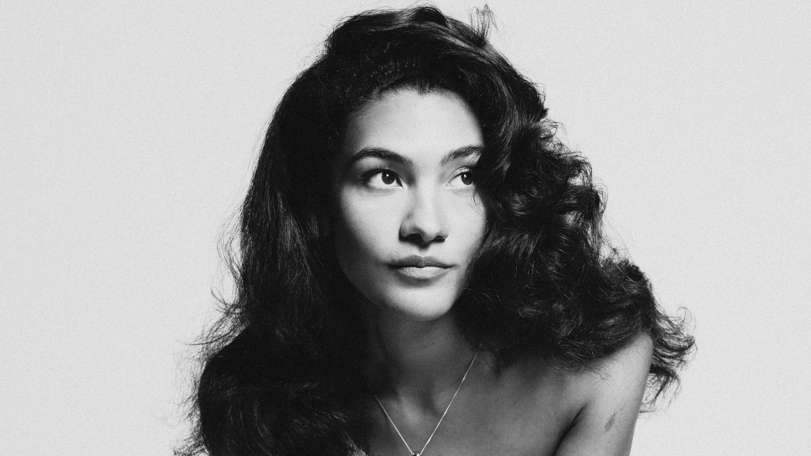

Olivia Dean
Olivia Lauryn Dean
Soul / R&B
Londres, Inglaterra
Sobre a Olivia Dean
Olivia Dean nasceu em 1999 em Haringey, Londres, filha de pai inglês e mãe jamaicano-guianense. Cresceu ouvindo Carole King e Al Green com o pai, e Jill Scott e Aretha Franklin com a mãe — influências que moldaram seu estilo soul, jazz e R&B. Estudou na renomada BRIT School e começou a carreira cantando como backing vocal para a banda Rudimental. Seu álbum de estreia, "Messy" (2023), foi indicado ao Mercury Prize, mas foi com "The Art of Loving" (2025) que se tornou um fenômeno: colocou quatro músicas simultaneamente no Top 10 do Reino Unido — um feito inédito para uma artista solo — e lhe rendeu o Grammy de Melhor Artista Revelação em 2026.
Música mais famosa
🎵
Man I Need
Single do álbum "The Art of Loving" (2025) e primeiro Nº 1 de Olivia Dean nas paradas do Reino Unido, marcando o grande salto de sua carreira para o mainstream.
← Voltar para todos os artistas